Local review pack. Nothing has been submitted. Upload guide and remaining steps
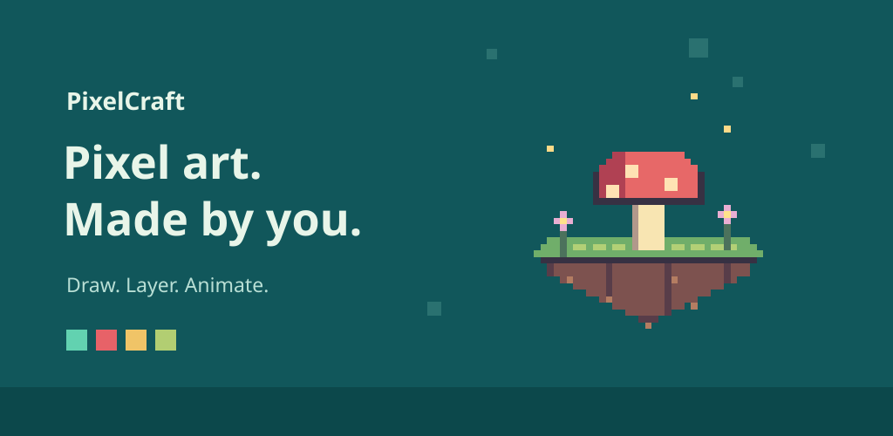
PixelCraft - Pixel Art Editor
Draw pixel art, build sprites and animate frame by frame on phones and tablets
Make pixel art wherever you like to draw. PixelCraft is a free, open-source pixel art and animation editor for Android tablets and phones. Sketch a sprite, organize its layers, and bring it to life frame by frame. Drawing and editing work locally, without a PixelCraft account, ads, or in-app purchases. DRAW AND REFINE Use the pencil, eraser, fill, eyedropper, lines, rectangles and ellipses. Choose brush sizes and shapes, keep named colors close at hand, and zoom in to work on individual pixels. Undo and Redo let you explore without losing your place. KEEP YOUR ARTWORK EDITABLE Build with layers and groups. Adjust visibility, opacity and order, and work with linked cels. Select, copy, move, flip, rotate or crop your artwork. Native .pixel projects keep supported editing information so you can continue on desktop or Android, within the Android project limits. ANIMATE FRAME BY FRAME Add and duplicate frames, set their durations, name animation ranges, and choose playback direction and speed. Use onion skin to compare neighboring frames, and watch your animation in the Preview panel. MADE FOR TABLETS, ADAPTED FOR PHONES Keep your palette and Preview beside the canvas on a tablet, or open compact sheets on a phone. Switch between light and dark themes. Zen drawing mode hides most controls while keeping essential tools within reach. Touch, keyboard, mouse and supported stylus input are available, with optional pressure-sensitive brush size. OPEN, SAVE AND EXPORT Save editable PixelCraft projects, open supported PNG/APNG, GIF and Aseprite files, and export PNG images, animated GIFs, supported ASE files, or a PNG sprite sheet with matching JSON metadata. Use Android's file picker and sharing controls to choose where files go. Format support varies; not every feature from another editor is preserved. TILES AND REFERENCES Create a tileset from your artwork, stamp tiles, and add embedded image references as drawing guides. CURRENT ANDROID LIMITS This early Android version supports canvases up to 256 x 256 pixels, 32 layers and 64 frames, with file and memory limits. It does not yet include every desktop feature. Keep backups of important work, especially before changing between test and release builds. PixelCraft is free and open source under the MIT License. Source, documentation and feedback: https://github.com/asad-albadi/PixelCraft Support: asad.badi@astralhive.om
PixelCraft comes to Android phones and tablets. - Draw with pixel tools, named colors and selections. - Organize layers and animate with frames, tags and onion skin. - Save editable projects and export images, GIFs and sprite sheets. - Focus on your artwork in Zen drawing mode. - Use touch or a supported stylus, with optional pressure-sensitive brush size. This early Android version supports up to 256 x 256 pixels, 32 layers and 64 frames.
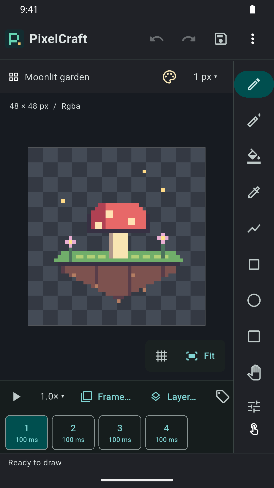
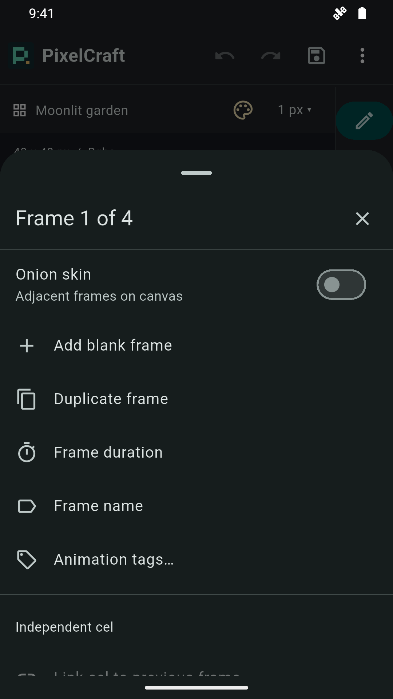
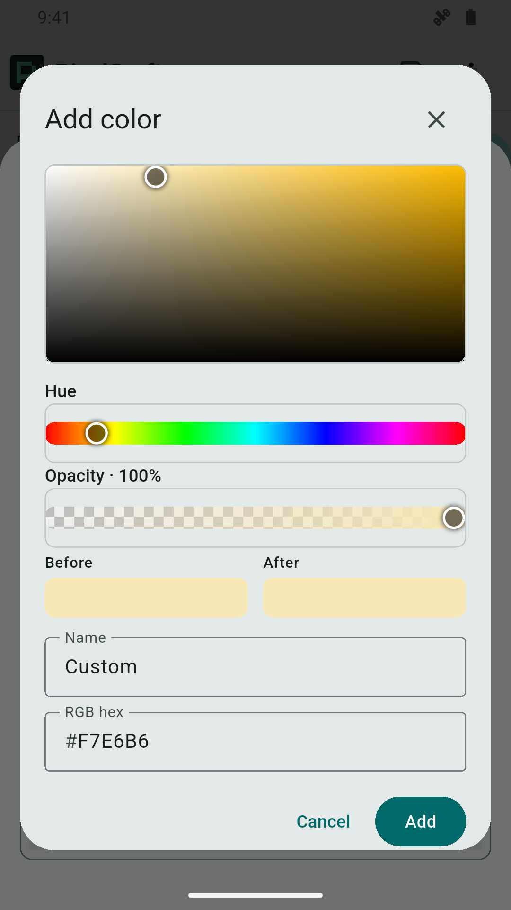
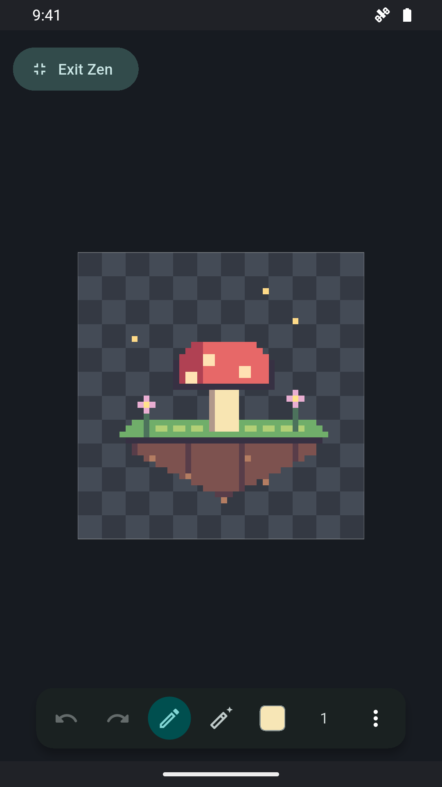
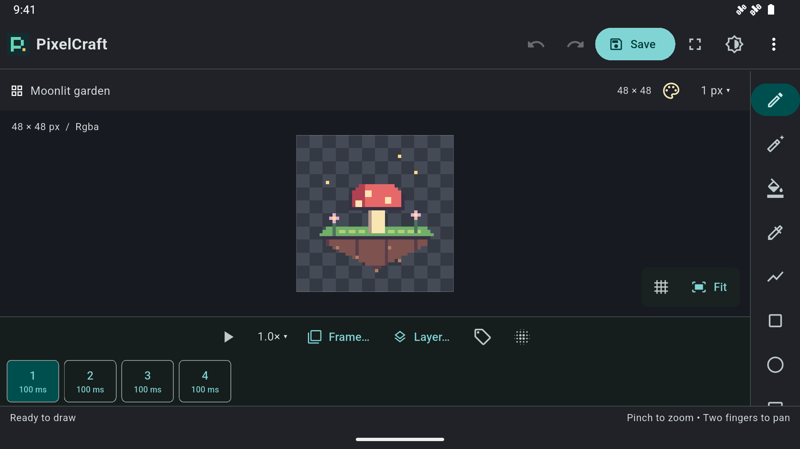
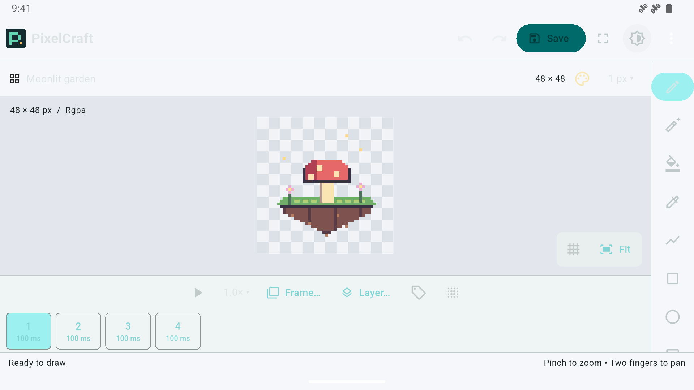
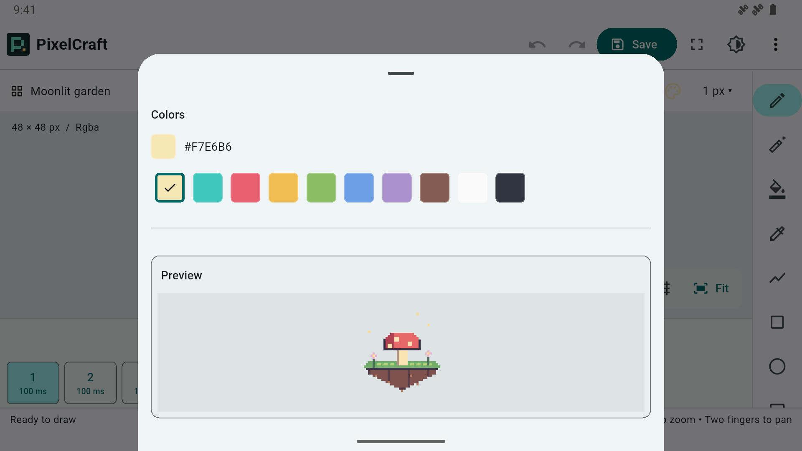
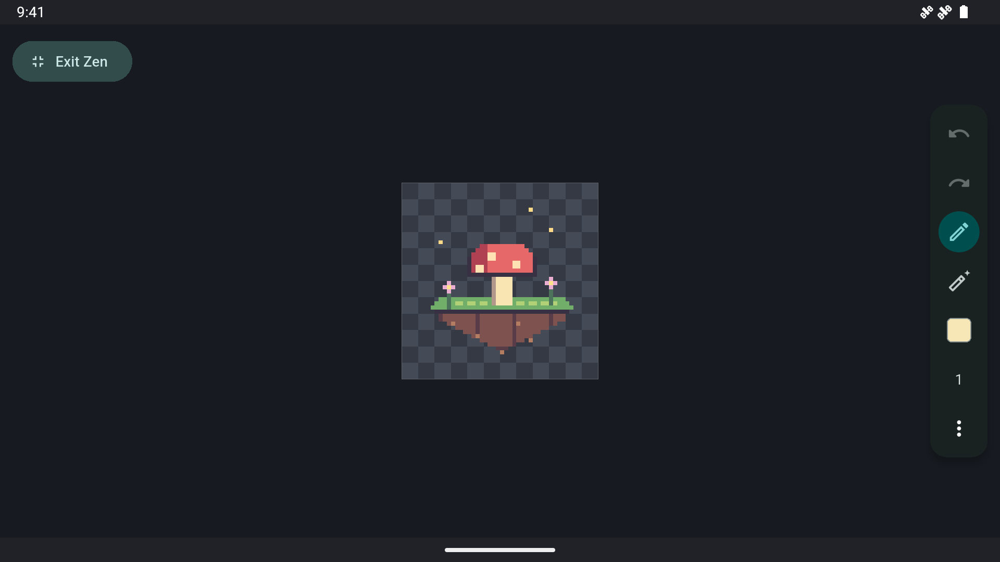
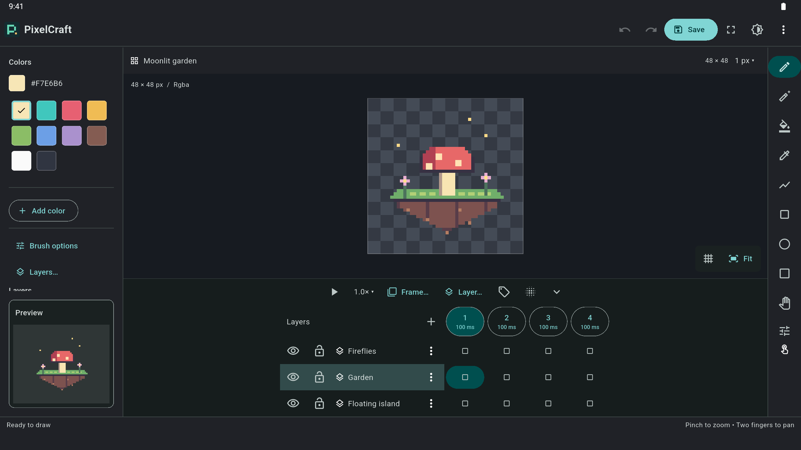
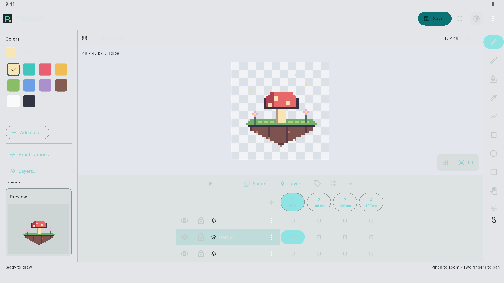
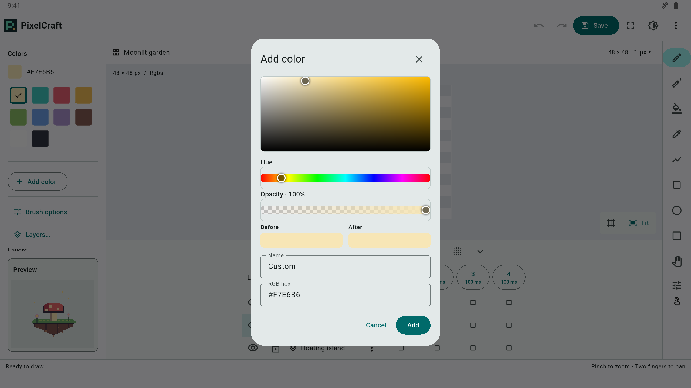
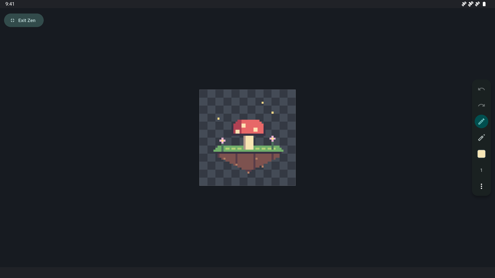